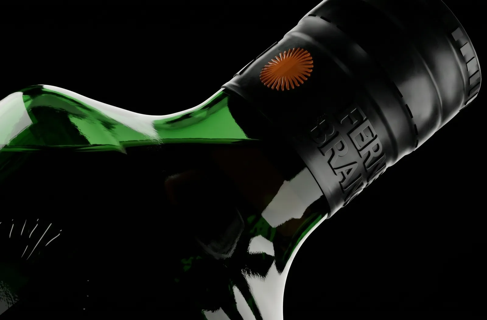
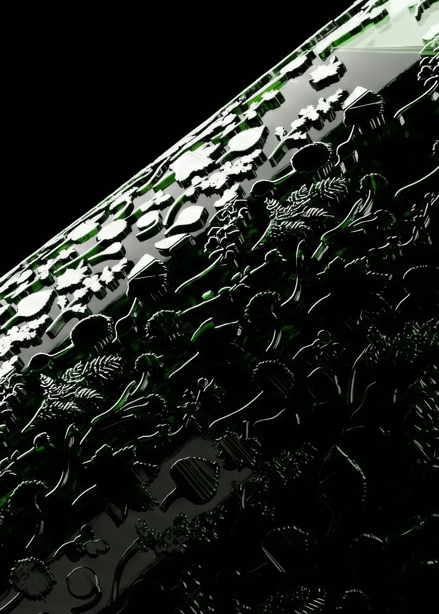
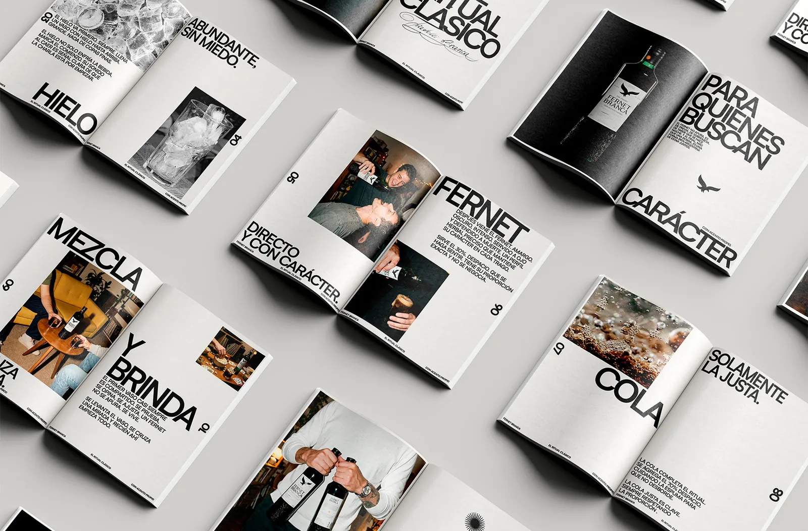
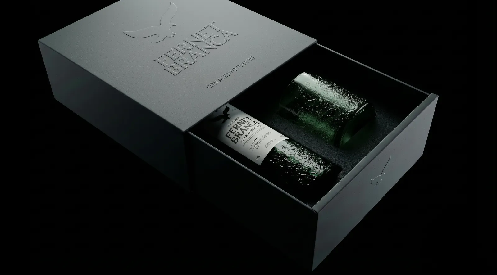
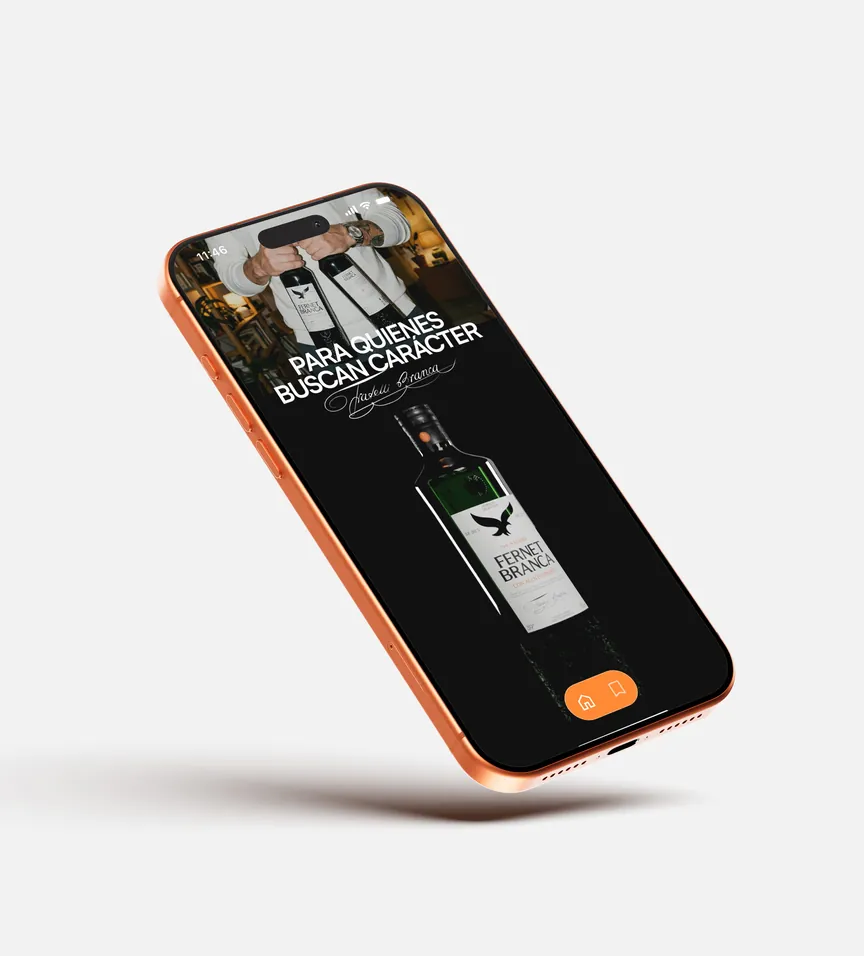
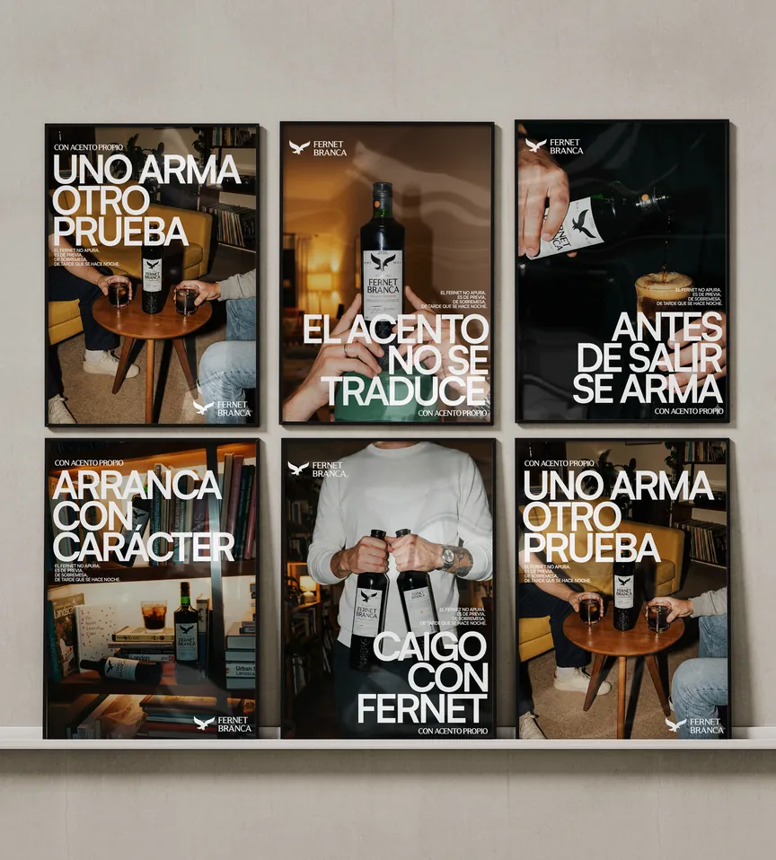

Fernet Branca
Con acento propio
Este proyecto reinterpreta Fernet Branca desde la cultura argentina y celebra cómo el país ha convertido un producto italiano en un ritual social propio. El objetivo era crear una identidad única para la versión producida allí, conservando su herencia pero dándole voz propia.
La propuesta incluye el rediseño de la botella, el sistema de etiquetas y la identidad visual, y combina vidrio en relieve, tipografía cuidada y una estética minimalista para una expresión más contemporánea de la marca. El concepto, Con Acento Propio, pone en valor la identidad cultural del fernet argentino y lo sitúa como algo más que una bebida: un símbolo de encuentro, tradición y momentos compartidos.
El proyecto se extiende a una estrategia de comunicación y una dirección de arte de campaña inspiradas en rituales cotidianos, de la previa antes de salir a la sobremesa. Entre branding, packaging, diseño de producto y fotografía, construye una experiencia de marca coherente que une el origen italiano del fernet con la cultura argentina de hoy, celebrando a las personas y los momentos que lo hacen único.
This project reimagines Fernet Branca through the lens of Argentine culture, celebrating how the country has transformed an Italian product into a distinctive social ritual. The objective was to create
a unique identity for the locally produced version, preserving
its heritage while giving it a voice of its own.
The proposal includes a redesign of the bottle, label system,
and visual identity, combining embossed glass, refined typography, and a minimalist aesthetic to create a more contemporary expression of the brand. The concept, Con Acento Propio, highlights the cultural identity of Argentine Fernet, positioning it as more than a drink:
a symbol of connection, tradition, and shared moments.
The project extends into a communication strategy and campaign
art direction inspired by everyday rituals, from gatherings before going out to conversations after dinner. Through branding,
packaging, product design, and photography, the project creates
a cohesive brand experience that connects Fernet’s Italian origins with contemporary Argentine culture, celebrating the people
and moments that make it unique.






Brief me
Something.
chavescerrejon@gmail.com
[ Get in touch ]
Please feel free to contact me
to discuss your project.
I’ll make it sharper.